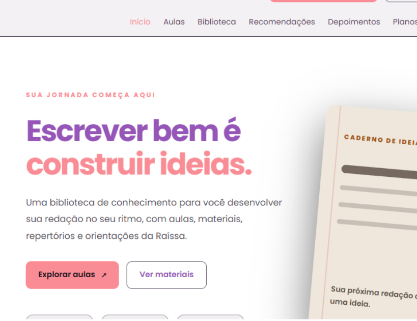
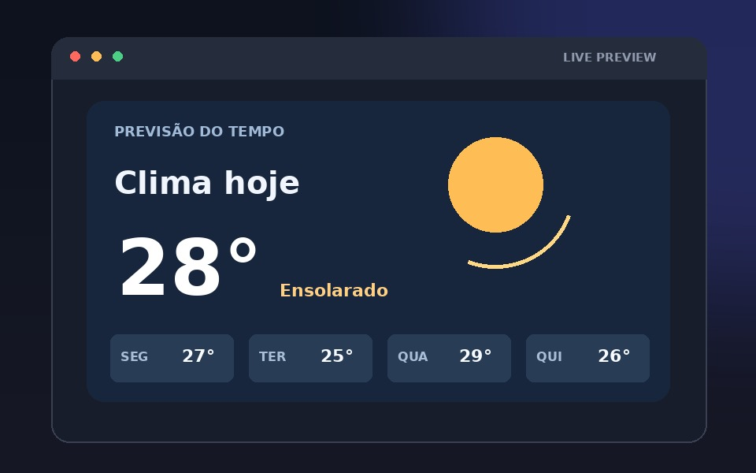

Fé e Reflexões
Amo aprender na palavra de Deus e fortalecer minha fé, refletir sobre a vida e buscar sabedoria e propósito.
PORTFÓLIO PESSOAL
Estudante e entusiasta na área da saúde, com interesse em aprender, criar, desenvolver, e solucionar problemas e conectar pessoas a soluções inteligentes.

SOBRE MIM
Sou Raissa, tenho 21 anos, sou estudante de Análise e Desenvolvimento de Sistemas no Senac Minas e, no Grupo Valor sou profissional SDR especializado em crédito estruturado e Consultor de negócios & Soluções financeiras.
Neste portfólio, reúno a minha evolução acadêmica e grandes projetos que refletem a minha paixão em tecnologia e em criar soluções que agregam valor.
E Conhecimentos que vão desde fundamentos da bolha tecnológica até inteligência em negócios
Conheça minha trajetóriaO QUE GOSTO DE FAZER
Amo aprender na palavra de Deus e fortalecer minha fé, refletir sobre a vida e buscar sabedoria e propósito.
Tipo de artesanato e técnica de personalização de álbuns usado para guardar memórias, fotografias e recordações de forma criativa.
Gosto de expandir meus conhecimentos, descobrir novos assuntos, habilidades, conceitos, técnicas e compreender diferentes perspectivas.
Um momento para desacelerar, organizar os pensamentos e apreciar os pequenos detalhes da vida.
Cuidar da saúde física, é cuidar da saúde mental ao mesmo tempo, superar meus próprios limites e desenvolver disciplina e constância.
Gosto de criar e experimentar receitas, explorar sabores e transformar ingredientes em boas experiências individuais e coletivas.
REGISTROS DA MINHA TRAJETÓRIA
Pequenos fragmentos de tempo congelados.
01 / 03DESTAQUES


Plataforma de redação
Para quem busca melhorar sua escrita e desenvolver habilidades de comunicação.
Saiba mais
PROPOSTA ACADÊMICA
Estudo de cards de previsão do tempo, hierarquia visual e adaptação para telas menores.
Solicitar informações
PROPOSTA ACADÊMICA
Layout de vitrine com cards, filtros visuais e organização de produtos usando CSS Grid.
Solicitar informaçõesJORNADA
Abrangência completa em hardware, redes locais, bancos de dados, algoritmos e desenvolvimento de aplicações para desktop e web.
Senac minas | 2023 - 2025
Graduação voltada para programação, desenvolvimento interfaces web, organização de projetos, redes, IA e inovação
Senac minas | 2026 - Em processo
Foco na gestão de políticas de saúde e segurança, avaliação e controlo de riscos ocupacionais, investigação de acidentes, primeiros socorros, planos de emergência e ações educativas no ambiente laboral.
Senac minas | 2022 - 2023
Domínio de análise de dados, otimização de fluxos e estruturação de informações para suporte à decisão
Senac minas | 2025
Eu juntamente de minha turma TI, desenvolvemos um jogo em python, inspirado em Pokemon, mas que se passa no próprio SenacMinas.
Senac minas | 2024 - 2025
Aprofundamento contínuo em Python, automação de processos, controlo de versão com Git e estruturação de ambientes de desenvolvimento eficientes no VS Code.
Conhecimentos
Elaboração e estruturação de planilhas eletrônicas e relatórios gráficos básicos para otimização de fluxos analíticos.
Conhecimentos
Autônoma
03/11/2026 — Em andamento
Consultoria negócios focada em consórcios, estruturação de crédito, estratégias de expansão de parcerias e soluções corporativas no setor financeiro.
Atual
CONTATO
Investir em conhecimento é investir em você mesmo!